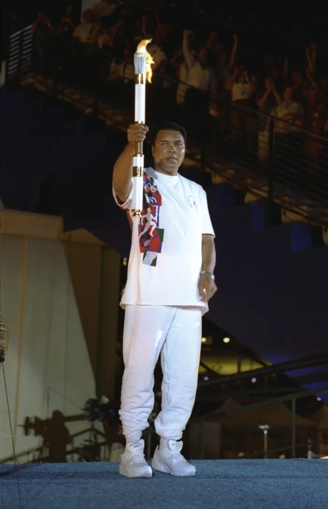

Muhammad Ali was a heavyweight boxing champion with an impressive 56-win record. He was also known for his brave public stance against the Vietnam War.
Muhammad Ali was a boxer, philanthropist and social activist who is universally regarded as one of the greatest athletes of the 20th century. Ali became an Olympic gold medalist in 1960 and the world heavyweight boxing champion in 1964.
Following his suspension for refusing military service, Ali reclaimed the heavyweight title two more times during the 1970s, winning famed bouts against Joe Frazier and George Foreman along the way. Diagnosed with Parkinson's disease in 1984, Ali devoted much of his time to philanthropy, earning the Presidential Medal of Freedom in 2005.
Ali was born on January 17, 1942, in Louisville, Kentucky. His birth name was Cassius Marcellus Clay Jr.
At an early age, young Clay showed that he wasn't afraid of any bout — inside or outside of the ring. Growing up in the segregated South, he experienced racial prejudice and discrimination firsthand.
At the age of 12, Clay discovered his talent for boxing through an odd twist of fate. After his bike was stolen, Clay told a police officer, Joe Martin, that he wanted to beat up the thief.
"Well, you better learn how to fight before you start challenging people," Martin reportedly told him at the time. In addition to being a police officer, Martin also trained young boxers at a local gym.
Clay started working with Martin to learn how to spar and soon began his boxing career. In his first amateur bout in 1954, he won the fight by split decision.
Clay went on to win the 1956 Golden Gloves tournament for novices in the light heavyweight class. Three years later, he won the National Golden Gloves Tournament of Champions, as well as the Amateur Athletic Union's national title for the light heavyweight division.
In 1960, Clay won a spot on the U.S. Olympic boxing team, and traveled to Rome, Italy, to compete. At six feet, three inches tall, Clay was an imposing figure in the ring, but he also became known for his lightning speed and fancy footwork. After winning his first three bouts, Clay defeated Zbigniew Pietrzkowski of Poland to win the light heavyweight Olympic gold medal.
After his Olympic victory, Clay was heralded as an American hero. He soon turned professional with the backing of the Louisville Sponsoring Group and continued overwhelming all opponents in the ring.
Clay joined the Black Muslim group Nation of Islam in 1964. At first, he called himself Cassius X before settling on the name Muhammad Ali. The boxer eventually converted to orthodox Islam during the 1970s
Ali died on June 3, 2016, in Phoenix, Arizona, after being hospitalized for what was reportedly a respiratory issue. He was 74 years old.
The boxing legend had been suffering from Parkinson’s disease and spinal stenosis. In early 2015, the athlete battled pneumonia and was hospitalized for a severe urinary tract infection.